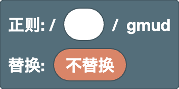

[ ] 之中
替换替换字符串中
根
汇总正则表达式和替换的基础积木。工作区中只有一个。
根（正则 / 替换）

用来组合正则表达式和替换的基础积木。它始终在工作区中，无法删除。
- 正则槽：在这里放入模式。一开始是文本输入框，可以直接输入正则表达式。 右键 →“转换为积木”可以把输入的内容变成积木。
- 替换槽：保持“不替换”时，结果中会高亮显示匹配的部分。 连接替换用的积木后，会改为显示替换后的结果。
标志固定为 gmud。
g（global）：查找所有匹配，而不只是第一个m（multiline）：^和$匹配每一行的开头和结尾，而不只是整个文本的开头和结尾u（unicode）：把表情符号等字符当作一个字符处理，并且可以使用\p{...}d（hasIndices）：同时记录每个分组匹配的位置（不影响结果的显示）
示例
- 正则
5，替换6→1525变成1626（所有匹配都会被替换）
位置
匹配位置而不是字符的积木。它们匹配 0 个字符，与其他积木组合使用，用来指定匹配发生的位置。
行首（^）

表示行的开头位置。它不匹配任何字符，只匹配位置。
因为本编辑器使用了 m 标志，所以它会匹配每一行的开头，而不只是整个文本的开头。
示例
^a→aaa（只匹配第一个 a）
行尾（$）

表示行的结尾位置。它不匹配任何字符，只匹配位置。
因为本编辑器使用了 m 标志，所以它会匹配每一行的结尾，而不只是整个文本的结尾。
示例
a$→aaa（只匹配最后一个 a）
单词边界（\b / \B）

表示单词边缘的位置。
在下拉菜单中选择种类。
\b：单词边界，即\w字符（字母、数字或_）与其他字符（或文本的两端）之间的位置\B：不是单词边界的位置
示例
\bcat\b→cat concat（只匹配作为完整单词的 cat）
注意
\w 只包括 ASCII 字母、数字和 _，所以像 é 这样带重音的字母以及汉字等非拉丁文字都不算单词字符。
在这类文本中，边界可能不在你预想的位置（例如 \b 会出现在 café 的中间，也就是 é 的前面）。
前瞻 / 后顾（(?=) / (?!) / (?<=) / (?<!)）

检查当前位置的紧后面（或紧前面）是否是里面的模式。 它只表示位置，所以里面的模式不包含在匹配结果中。
- 第一个下拉菜单：空白为前瞻（检查后面的内容），
<为后顾（检查前面的内容） - 第二个下拉菜单：
=表示“有”，!表示“没有”
示例
\d+(?=px)→100px and 200em（只匹配后面跟着 px 的数字）(?<=\$)\d+→$30 and 30€（只匹配 $ 后面的数字）
字符
决定匹配哪些字符的积木。也能在字符类 [ ] 中使用的积木带有“字符类”标签。
文本（自由输入）

输入的内容会原样成为正则表达式（或替换）的一部分。 可以输入任意数量的字符。
示例
cat→cats and dogs
注意
. * + ? ( [ 等字符在正则表达式中有特殊含义。
要匹配这些字符本身，请像 \. 这样转义，或者使用转义字符积木。
任意字符（.）

匹配除换行符以外的任意一个字符。
示例
a.c→abc a-c ac
注意
不能在字符类中使用（[.] 表示点号本身）。
数字 / 单词字符（\d / \D / \w / \W）

在下拉菜单中选择种类。
\d：一个数字（[0-9]）\D：一个不是数字的字符\w：一个字母、数字或_（[A-Za-z0-9_]）\W：一个不是字母、数字或_的字符
示例
\d+→Price: 120 USD
注意
\d 和 \w 只包括 ASCII 字符。带重音的字母（é、ü）、汉字等非拉丁文字以及全角数字（１２３）都不包括在内。
要匹配这些字符，请使用 Unicode 属性。
空白（\s / \S）

在下拉菜单中选择种类。
\s：一个空白字符（空格、全角空格、制表符、换行符等）\S：一个不是空白的字符
示例
\S+→foo bar（用空格分隔的两个单词）
Unicode 属性（\p{} / \P{}）

按字符的种类（Unicode 属性）匹配一个字符。
- 第一个下拉菜单：
p表示属于该种类的字符，P表示不属于该种类的字符 - 第二个下拉菜单：空白表示通用类别（字母、数字、符号等），
Script=表示文字系统（希腊文、西里尔文等） - 文本框：属性的名称
常用的名称：
- 通用类别：
L（字母），N（数字），P（标点），S（符号） - 文字系统：
Latin，Greek，Cyrillic，Han（汉字）
示例
\p{Script=Greek}+→alpha αβγ\p{L}+→café 123（与\w不同，它也包括带重音的字母）
注意
数字、空格和大部分标点等多种文字共用的字符属于 Script=Common，而不属于某个特定的文字系统。
如果要包括这些字符，请把它们一起放进字符类，例如 [\p{Script=Greek}\d]。
外部链接
-
Unicode 字符类转义（MDN）：
介绍
\p{}的写法以及可以使用的属性种类（通用类别、Script=文字系统，以及Emoji等属性）
制表符（\t）

一个制表符。在替换中会插入一个制表符。
示例
- 正则
,，替换\t→a,b变成a⇥b（用制表符分隔）
换行（\n）

一个换行符。在替换中会插入一个换行。
示例
- 正则
,，替换,\n→a,b变成a,⏎b（在每个逗号后换行）
转义字符（\/ \. \( 等）

把在正则表达式中有特殊含义的字符当作字符本身处理。在下拉菜单中选择字符。
-
模式和字符类：可以使用
/ \ ^ $ ( ) . ? [ ] * { } | +。-只能在字符类中使用（用来和a-z这样的范围区分开）。 -
替换：除了
$以外都可以使用（会变成去掉\的字符本身）。 要插入$，请使用$$积木。
示例
1\.5→1.5 105（匹配点号本身）
字符类（[ ] / [^ ]）
![[ ] 积木](../images/blocks/common/char_class.png)
根据放在里面的内容匹配一个字符。用齿轮图标可以改变槽的数量。
在下拉菜单中选择种类。
- 空白（
[ ]）：里面任意一个字符 ^（[^ ]）：里面的字符以外的一个字符
里面可以放入文本、\d \w、\s、\p{}、制表符、换行、转义字符和范围（a-z）积木。
右键 →“外部输入”会把槽竖着排列，内容变长时更容易阅读。
示例
[aeiou]→hello[^0-9]+→12abc34
范围（a-z）

匹配字符编码在两个字符之间的一个字符。每个输入框中输入一个字符（或 \- 这样的一个转义）。
示例
[a-f]+→xcafey[α-ω]+→αβγABC（希腊文小写字母）
注意
范围按照字符编码的顺序。[A-z] 还包括 [ \ ] ^ _ ` 这 6 个字符，它们位于 Z 和 a 之间。
如果只要字母，请放入 A-Z 和 a-z 两个范围，组成 [A-Za-z]。
连接 / 选择
组合多个积木的积木。连接会按从左到右的顺序排列，选择会匹配其中任意一个。用齿轮图标可以改变槽的数量。
连接

把放在里面的内容按从左到右的顺序排列。用齿轮图标可以改变槽的数量。
右键 →“外部输入”会把槽竖着排列，内容变长时更容易阅读。
示例
- 连接
^、\d+和$→^\d+$（只包含数字的行）
选择（|）

匹配放在里面的任意一个。选项按从左到右的顺序尝试，使用第一个匹配成功的选项。 用齿轮图标可以改变槽的数量。
右键 →“外部输入”会把槽竖着排列，内容变长时更容易阅读。
示例
cat|dog→a cat and a dog
注意
| 会把它前后的全部内容分开，所以和其他积木连接时，请用 (?:) 包起来。
例如，先连接“a|b”再连接“c”，会得到 a|bc，意思是“a”或“bc”。
如果想表示“a 或 b，后面跟 c”，请使用 (?:a|b)c。
分组
把模式组合在一起，或记录（捕获）匹配的部分以便之后使用的积木。捕获的部分可以用在后向引用和替换中。
非捕获分组（(?:)）

把里面的模式组合成一个整体。它不会获得用于后向引用或替换的编号。
积木不会自动分组，所以想确定重复或选择（|）的范围时，请使用它。
示例
(?:ab)+→abababc（把 ab 作为整体重复）
捕获分组（( )）

把里面的模式组合成一个整体，并记录（捕获）匹配的部分。
捕获的部分可以用在后向引用中，也可以在替换中用 $1 使用。
分组从左到右（按 ( 出现的顺序）编号为 1、2、3……。命名分组也计入编号。
示例
- 正则
(\d+)-(\d+)，替换$2-$1→12-34变成34-12
命名分组（(?<name>)）

带名字的捕获分组。捕获的部分可以用在命名后向引用中，也可以在替换中用 $<name> 使用。
在下拉菜单中选择“创建组名…”来创建名字。名字必须以字母开头，并且只能包含字母、数字和 _。
示例
- 正则
(?<year>\d{4})-\d{2}，替换$<year>→2025-08变成2025
后向引用（\1）

匹配与指定编号的分组所捕获的文本相同的文本。在下拉菜单中选择分组编号。
示例
(\w)\1→book（同一个字符连续出现两次）
注意
命名分组也计入编号。另外，下拉菜单中的编号取决于工作区中分组积木的数量。 在正则槽中以文本形式输入的分组不计算在内。
命名后向引用（\k<name>）

匹配与命名分组所捕获的文本相同的文本。在下拉菜单中选择组名。
示例
(?<q>["'])\w+\k<q>→"abc" 'def"（用同一种引号包起来的文本）
重复
重复积木只会重复它前面的一个元素。
如果在里面放入多个字符，只会重复最后一个字符（abc+ 只重复 c）。
要把它们作为整体重复，请使用 (?:)。
注意
在重复中再放入重复（嵌套）可能会让匹配变得极其缓慢。
例如，把 (?:a+)+$ 用在 aaaaaaaaaaaaaaaaaaaaaaaaaaaaab 这种在末尾匹配失败的文本上时，需要尝试的组合数会随长度呈指数增长，浏览器可能会卡死。
(?:a+)+ 与 a+ 的意思相同，所以请尽量避免嵌套。
0 次或 1 次（?）

如果里面的模式存在就匹配 1 次，不存在就匹配 0 次（可有可无）。
在下拉菜单中选择种类。
- 空白（
?）：尽量匹配 1 次 ?（??）：尽量匹配 0 次
示例
colou?r→color colour- 正则
(\d)?(\d+)，替换[$1][$2]→123变成[1][23] -
正则
(\d)??(\d+)，替换[$1][$2]→123变成[][123]（使用??时，第一个分组会尽量什么都不取，所以所有数字都归第二个分组。 只有当后面的部分也能取到同样的字符时，??才会产生区别）
0 次或更多 / 1 次或更多（* / +）

重复里面的模式。
- 第一个下拉菜单：
*表示 0 次或更多，+表示 1 次或更多，尽量多地重复 - 第二个下拉菜单：选择
?则尽量少地重复（*?+?）
示例
a+→caaat-
正则
<.+?>，替换为空 →<p><b>1</b> + <i>2</i> = 3</p>变成1 + 2 = 3（只删除标签） -
如果没有
?，<.+>会把从第一个<到最后一个>的全部内容作为一个匹配，所以所有内容都会被删除
在“HTML”示例中试着加上或去掉 ?，看看有什么区别。
恰好 N 次（{N}）

把里面的模式恰好重复 N 次。
示例
\d{3}→1234567
N 次或更多（{N,}）

把里面的模式重复 N 次或更多。
在下拉菜单中选择种类。
- 空白（
{N,}）：尽量多地重复 ?（{N,}?）：尽量少地重复
示例
\d{2,}→1 22 333
N 到 M 次（{N,M}）

把里面的模式重复至少 N 次、最多 M 次。M 不能小于 N。
在下拉菜单中选择种类。
- 空白（
{N,M}）：尽量多地重复 ?（{N,M}?）：尽量少地重复
示例
\d{2,3}→12345
替换
把替换积木连接到根积木的替换槽上。 在替换中，也可以使用文本、制表符、换行和转义字符积木。
替换连接

在替换中把放在里面的内容按从左到右的顺序排列。用齿轮图标可以改变槽的数量。
右键 →“外部输入”会把槽竖着排列，内容变长时更容易阅读。
示例
- 连接
[、$&和]→ 替换字符串[$&]。配合正则\d+，a1变成a[1]
$ 本身（$$）

在替换中插入 $ 字符。因为 $ 在替换中有特殊含义，所以 $ 本身要写成 $$。
示例
- 正则
\d+，替换$$$&→100变成$100
匹配的文本（$&）

插入匹配到的文本本身。
示例
- 正则
\d+，替换($&)→a1 b22变成a(1) b(22)
匹配前的文本（$`）

插入目标文本中位于匹配部分之前的全部内容。
示例
- 正则
=，替换=$`→a=变成a=a
匹配后的文本（$'）

插入目标文本中位于匹配部分之后的全部内容。
示例
- 正则
=，替换$'=→=b变成b=b
分组引用（$1）

插入指定编号的分组所捕获的文本。在下拉菜单中选择分组编号。
示例
- 正则
(\d+)-(\d+)，替换$2-$1→12-34变成34-12
注意
命名分组也计入编号。另外，下拉菜单中的编号取决于工作区中分组积木的数量。 在正则槽中以文本形式输入的分组不计算在内。
命名分组引用（$<name>）

插入命名分组所捕获的文本。在下拉菜单中选择组名。
示例
- 正则
(?<year>\d{4})-\d{2}，替换$<year>→2025-08变成2025